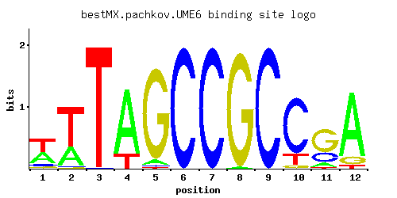

UME6
YDR207C, RIM16, NIM2, CAR80
Key transcriptional regulator of early meiotic genes, binds URS1 upstream regulatory sequence, couples metabolic responses to nutritional cues with initiation and progression of meiosis, forms complex with Ime1p, and also with Sin3p-Rpd3p
Best-performing DNA-binding model.

View and copy the recommended matrices ↘
A | 0.378 0.318 0.001 0.812 0.046 0.001 0.001 0.015 0.001 0.001 0.110 0.842 C | 0.076 0.013 0.004 0.002 0.014 1.000 0.999 0.001 0.998 0.803 0.251 0.005 G | 0.064 0.007 0.001 0.001 0.934 0.001 0.001 0.985 0.001 0.047 0.616 0.107 T | 0.483 0.662 0.996 0.186 0.006 0.001 0.001 0.001 0.002 0.150 0.022 0.046
A | 37 31 0 81 4 0 0 1 0 0 11 84 C | 7 1 0 0 1 100 99 0 99 80 25 0 G | 6 0 0 0 93 0 0 98 0 4 61 10 T | 48 66 99 18 0 0 0 0 0 15 2 4
A | 0.17 -0.01 -5.77 0.93 -1.94 -5.77 -5.77 -3.06 -5.77 -5.77 -1.07 0.97 C | -0.86 -2.63 -3.81 -4.50 -2.55 1.71 1.71 -5.19 1.71 1.50 0.33 -3.58 G | -1.03 -3.25 -5.19 -5.19 1.65 -5.19 -5.19 1.70 -5.19 -1.34 1.23 -0.52 T | 0.41 0.73 1.14 -0.54 -3.98 -5.77 -5.77 -5.77 -5.08 -0.76 -2.68 -1.94
Alternative candidate matrices 7
Historical matrix candidates from the original ScerTF database. Expand a source to inspect its original logo, scores, and matrix values.
UME6Badis et. al.P = 9.88e-59View matrix ↘
UME6_AFoat et. al.P = 7.21e-64View matrix ↘
UME6_BFoat et. al.P = 7.46e-76View matrix ↘
UME6Harbison et. al.P = 1.10e-69View matrix ↘
UME6Macisaac et. alP = 1.46e-69View matrix ↘
UME6Zhu et. al.P = 2.31e-68View matrix ↘
UME6Zhao and StormoP = 3.74e-24View matrix ↘
Gene-level annotations and interactions.
Genes bound in ChIP-chip experiments 298 genes
YAL017W, YAL018C, YAL022C, YAL053W, YAL054C, YAR035W, YBL063W, YBL064C, YBL077W, YBL078C, YBL085W, YBL086C, YBR112C, YBR114W, YBR184W, YBR196C, YBR197C, YBR246W, YBR283C, YBR284W, YCL024W, YCL025C, YCR059C, YCR060W, YCR061W, YCR062W, YDL047W, YDL086W, YDL087C, YDL193W, YDL210W, YDL215C, YDR040C, YDR041W, YDR054C, YDR055W, YDR091C, YDR092W, YDR231C, YDR232W, YDR256C, YDR284C, YDR285W, YDR309C, YDR359C, YDR384C, YDR385W, YDR391C, YDR392W, YDR487C, YDR508C, YDR510W, YEL024W, YEL025C, YER018C, YER019W, YER044C-A, YER053C-A, YER054C, YER111C, YER112W, YER130C, YER131W, YER179W, YER184C, YER185W, YFL003C, YFL013W-A, YFL021W, YFL022C, YFR015C, YFR017C, YGL183C, YGL184C, YGL227W, YGL250W, YGL251C, YGR025W, YGR026W, YGR053C, YGR054W, YGR067C, YGR069W, YGR194C, YGR195W, YGR234W, YGR241C, YGR243W, YGR256W, YGR264C, YGR266W, YGR268C, YGR270W, YGR280C, YGR281W, YHL024W, YHL030W, YHL031C, YHR007C, YHR008C, YHR013C, YHR014W, YHR028C, YHR033W, YHR098C, YHR099W, YHR124W, YHR136C, YHR137W, YHR138C, YHR153C, YHR154W, YIL033C, YIL090W, YIL091C, YIL100W, YIL101C, YIL126W, YIL127C, YIL144W, YIL145C, YIR013C, YIR014W, YJL006C, YJL045W, YJL051W, YJL089W, YJL090C, YJL102W, YJL103C, YJL106W, YJL107C, YJL108C, YJL133W, YJL152W, YJL153C, YJR009C, YJR044C, YJR091C, YJR092W, YJR095W, YJR119C, YJR120W, YJR121W, YKL015W, YKL016C, YKL073W, YKL074C, YKL078W, YKL217W, YKR065C, YLL019C, YLL020C, YLL029W, YLL030C, YLL037W, YLL039C, YLL043W, YLL044W, YLL045C, YLL046C, YLR012C, YLR013W, YLR095C, YLR096W, YLR112W, YLR114C, YLR115W, YLR259C, YLR260W, YLR263W, YLR286C, YLR294C, YLR295C, YLR296W, YLR297W, YLR314C, YLR315W, YLR317W, YLR344W, YLR346C, YLR373C, YLR375W, YLR399C, YLR400W, YLR414C, YLR437C, YLR438W, YLR453C, YLR454W, YML042W, YML043C, YML058W, YML059C, YML084W, YML085C, YML088W, YML089C, YML091C, YML100W, YML101C, YML102C-A, YMR018W, YMR039C, YMR040W, YMR057C, YMR058W, YMR069W, YMR070W, YMR076C, YMR101C, YMR108W, YMR135W-A, YMR186W, YMR195W, YMR244C-A, YMR246W, YMR251W-A, YMR280C, YMR281W, YMR290C, YMR291W, YMR296C, YMR297W, YMR304C-A, YMR305C, YMR306W, YNL124W, YNL125C, YNL149C, YNL186W, YNL191W, YNL210W, YNL211C, YNL269W, YNL271C, YNL303W, YNL304W, YNL305C, YNR001C, YOL052C-A, YOL076W, YOL077C, YOL092W, YOL100W, YOL101C, YOL103W-A, YOL103W-B, YOL104C, YOL123W, YOL124C, YOL131W, YOR078W, YOR082C, YOR084W, YOR100C, YOR101W, YOR290C, YOR291W, YOR294W, YOR302W, YOR303W, YOR320C, YOR321W, YOR330C, YOR332W, YOR338W, YOR342C, YOR343C, YOR354C, YOR378W, YPL016W, YPL017C, YPL028W, YPL034W, YPL081W, YPL082C, YPL111W, YPL120W, YPL121C, YPL160W, YPL161C, YPL181W, YPL183C, YPL200W, YPL201C, YPL251W, YPL253C, YPR006C, YPR029C, YPR030W, YPR063C, YPR064W, YPR119W, YPR151C, YPR162C, YPR163C, YPR164W
Genes affected by TF deletion 473 genes
YBR006W, YCR010C, YCL050C, YDR034W-B, YDR366C, YHL044W, YHL048W, YIL078W, YIL110W, YIL142W, YIL144W, YIL146C, YIL084C, YIL116W, YIL148W, YLR214W, YLR244C, YLR216C, YMR045C, YMR046W-A, YNL016W, YNR057C, YOL013W-A, YAL068C, YGL009C, YKL043W, YLR461W, YPL015C, YPL017C, YDR207C, YCL049C, YDR034C-A, YDR034C-D, YDR035W, YDR365W-B, YIL077C, YIL109C, YIL141W, YIL079C, YIL111W, YIL143C, YIL082W, YIL145C, YIL083C, YIL147C, YKR009C, YKR013W, YLR217W, YNL019C, YOR222W, YOR192C-B, YBR186W, YGL038C, YGR122C-A, YHR145C, YKL073W, YLR024C, YLR087C, YMR189W, YNL238W, YNL270C, YNL210W, YOR003W, YPL018W, YIR001C, YIR003W, YIR034C, YLL030C, YMR101C, YNL149C, YOL104C, YOR317W, YOR351C, YGR244C, YIL046W, YIL016W, YIL018W, YIL020C, YJL145W, YLR152C, YLR156W, YML056C, YML087C, YML089C, YNL333W, YNL335W, YNR028W, YNL305C, YNL337W, YJL050W, YBR093C, YGR030C, YGR004W, YIR002C, YIR033W, YKL015W, YLL031C, YMR133W, YOL103W-B, YPL121C, YBR256C, YDR340W, YGL104C, YGR211W, YIL014W, YIL015W, YIL047C, YIL049W, YIL019W, YLR157C, YNL332W, YNL336W, YPL111W, YCL057W, YDR072C, YHL022C, YHL024W, YIL118W, YIL150C, YIL088C, YIL120W, YIL090W, YIL154C, YIL092W, YIL124W, YKR053C, YLR256W, YMR018W, YMR050C, YNR071C, YPL245W, YBL004W, YAR010C, YBR197C, YBR169C, YLR096W, YLR438C-A, YMR170C, YMR173W, YNL217W, YOR011W, YOR077W, YOR387C, YOR389W, YDR147W, YPL160W, YCL056C, YCR018C-A, YCL064C, YER179W, YIL085C, YIL117C, YIL087C, YIL121W, YIL153W, YIL091C, YIL123W, YIL155C, YJR027W, YJR029W, YNR066C, YJR148W, YAR009C, YBR230C, YGR131W, YGR161C-D, YHR153C, YJL088W, YKL085W, YLR035C-A, YLR099C, YLR037C, YLR101C, YLR438W, YMR195W, YPL054W, YOR388C, YOR390W, YBR136W, YBR070C, YFR017C, YHR029C, YIR036C, YIR038C, YIR011C, YIR042C, YNL155W, YOL084W, YOR298W, YPL276W, YBL064C, YBR291C, YDL198C, YGL081W, YHR214C-B, YIL022W, YIL024C, YIL060W, YJL153C, YLR132C, YML091C, YMR291W, YPL088W, YPL156C, YFL014W, YBR069C, YBR101C, YHR032W, YIR004W, YIR035C, YIR037W, YIR008C, YIR010W, YJR150C, YJR156C, YLL039C, YLR343W, YNL150W, YOR352W, YOR298C-A, YPL273W, YPL275W, YPR027C, YBL030C, YCL025C, YBR296C, YER062C, YIL021W, YIL053W, YIL023C, YIL027C, YJL222W, YML090W, YML035C, YMR319C, YNR001C, YGL062W, YCR061W, YGL183C, YGR294W, YIL094C, YIL158W, YIL096C, YIL098C, YIL130W, YIL162W, YIL100W, YIL132C, YIL164C, YKR055W, YKR087C, YKR093W, YML131W, YOL058W, YIL114C, YAL054C, YHR162W, YJL103C, YLR042C, YLR414C, YLR420W, YCR062W, YER188W, YGL184C, YGR295C, YIL093C, YIL125W, YIL157C, YIL127C, YLR263W, YMR056C, YMR058W, YML132W, YNL033W, YNL064C, YNR072W, YNR076W, YEL059C-A, YGR109W-A, YHR157W, YHR163W, YJL100W, YJL102W, YKL120W, YLR413W, YMR173W-A, YOR394W, YFL059W, YIR044C, YIR017C, YJL038C, YJR159W, YKL001C, YLL013C, YLL046C, YLL018C-A, YMR147W, YNL195C, YOL156W, YOL126C, YOL158C, YPR002W, YBL043W, YCL038C, YER044C-A, YGL119W, YGL157W, YGR264C, YGR234W, YIL030C, YIL062C, YIL032C, YIL004C, YIL006W, YIL036W, YLR136C, YLR168C, YLR142W, YDR174W, YFR018C, YIR012W, YIR043C, YIR014W, YIR016W, YJL005W, YJR158W, YLL047W, YLR353W, YMR148W, YNL126W, YNL132W, YNL196C, YOL155C, YOL157C, YPR029C, YPR002C-A, YNL316C, YBL005W-A, YBL069W, YBR302C, YIL001W, YIL031W, YIL003W, YIL033C, YIL005W, YIL035C, YIL067C, YKL216W, YML042W, YMR297W, YNR009W, YER091C, YDR056C, YDR090C, YDR032C, YFL003C, YHR014W, YHR018C, YIL134W, YIL106W, YIL138C, YIL170W, YIL108W, YIL140W, YIL172C, YLR297W, YLR299W, YMR006C, YAR053W, YDR210W-D, YDR272W, YFR056C, YGL065C, YGR144W, YGR117C, YHR202W, YJL079C, YLR114C, YLR455W, YLR457C, YMR245W, YNL235C, YNL269W, YPL076W, YBL107W-A, YDR055W, YER138W-A, YGL190C, YIL101C, YIL133C, YIL165C, YIL103W, YIL137C, YIL107C, YIL139C, YIL171W, YJR071W, YMR062C, YOL003C, YOL036W, YOL007C, YOL009C, YPL257W-B, YJR137C, YBR244W, YBR184W, YFR055W, YJL106W, YMR211W, YNL264C, YPR158W-B, YBR116C, YBR087W, YCR104W, YFR026C, YFR030W, YFR031C-A, YIR022W, YIR024C, YIR026C, YLR394W, YLR334C, YMR093W, YMR095C, YMR097C, YMR158C-B, YNL141W, YDR365W-A, YER049W, YGL101W, YIL008W, YIL038C, YIL070C, YIL040W, YIL072W, YIL011W, YIL042C, YIL074C, YIL044C, YIL076W, YKL162C-A, YNL012W, YPL134C, YGL033W, YFL062W, YGR024C, YIR021W, YLR359W, YLR329W, YLR393W, YMR094W, YMR096W, YOL161C, YOL131W, YOR306C, YOR338W, YOR374W, YPR007C, YPR071W, YER073W, YGR267C, YGR269W, YIL007C, YIL009C-A, YIL039W, YIL071C, YIL010W, YIL041W, YIL043C, YIL075C, YMR306C-A, YNR019W, YIL115C
Genes supported by both experiments 66 genes
YAL054C, YBL064C, YBR184W, YBR197C, YCL025C, YCR061W, YCR062W, YDR055W, YER044C-A, YER179W, YFL003C, YFR017C, YGL183C, YGL184C, YGR234W, YGR264C, YHL024W, YHR014W, YHR153C, YIL033C, YIL090W, YIL091C, YIL100W, YIL101C, YIL127C, YIL144W, YIL145C, YIR014W, YJL102W, YJL103C, YJL106W, YJL153C, YKL015W, YKL073W, YLL030C, YLL039C, YLL046C, YLR096W, YLR114C, YLR263W, YLR297W, YLR414C, YLR438W, YML042W, YML089C, YML091C, YMR018W, YMR058W, YMR101C, YMR195W, YMR291W, YMR297W, YNL149C, YNL210W, YNL269W, YNL305C, YNR001C, YOL103W-B, YOL104C, YOL131W, YOR338W, YPL017C, YPL111W, YPL121C, YPL160W, YPR029C
Predicted TF–TF partners 8 genes
DAL82, MIG1, MIG3, RSC3, RSC30, RSF2, SUT1, YPR196W